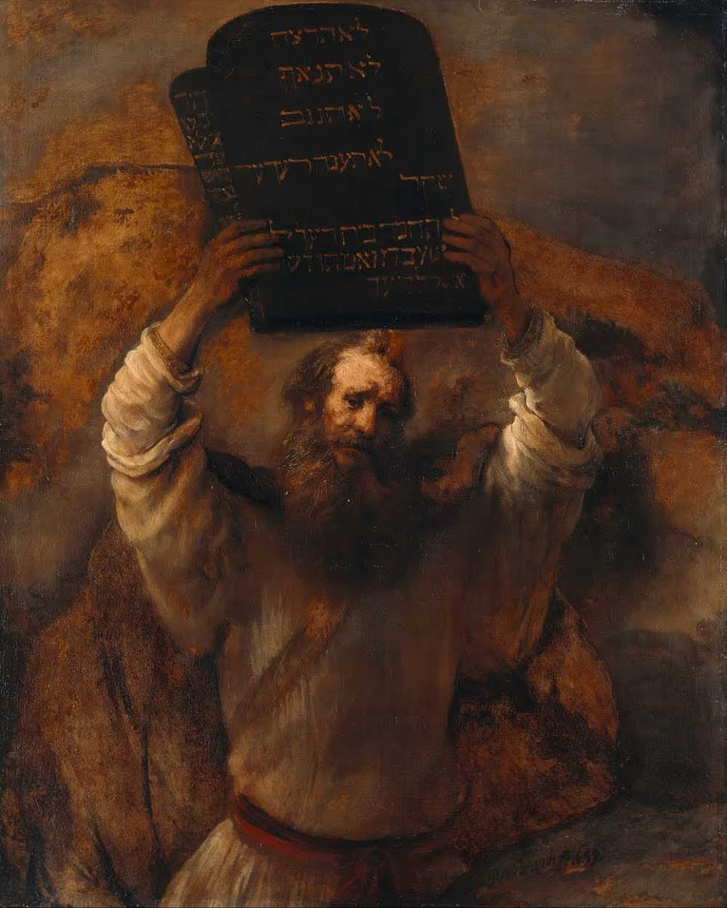
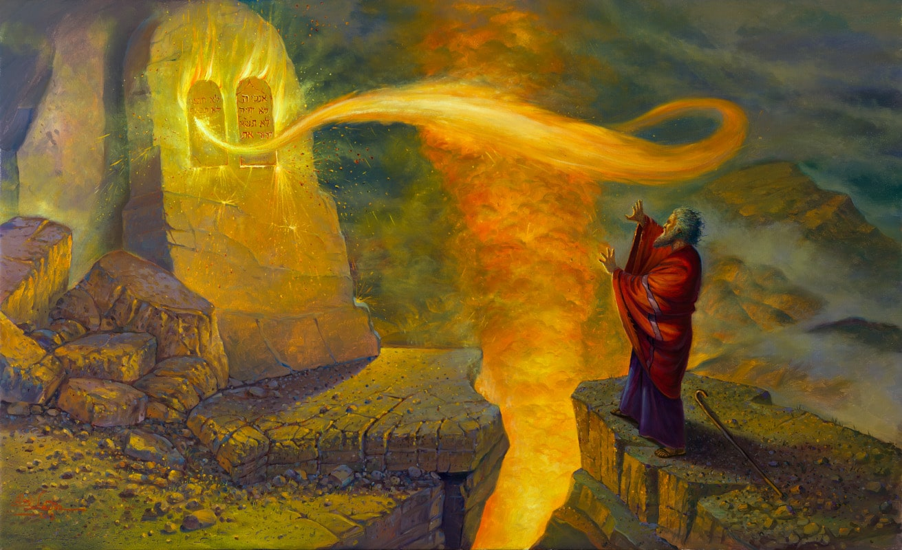
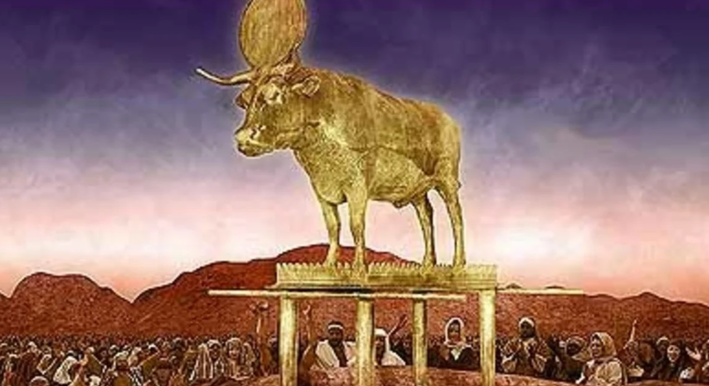

Decalogul sau Cele zece porunci
Într-o zi, pe când Iisus vorbea cu oamenii, un tânăr s-a apropiat de
El și l-a întrebat cu nerăbdare: „Învățătorule, ce trebuie să fac
pentru a avea viață veșnică?" Iisus l-a privit cu blândețe și i-a
răspuns: „De vrei să intri în viață, păzește poruncile" (Matei 19,
17). Apoi, i-a amintit câteva dintre Poruncile din Decalog,
arătându-ne cât de importante sunt acestea și în vremea noastră.
Decalogul sau Cele zece porunci (numele vine din cuvintele grecești
„deka" - zece și „logos" - cuvânt) sunt regulile pe care Dumnezeu
le-a dat oamenilor prin Moise, pe Muntele Sinai, cu foarte mult timp
în urmă, acum mai bine de 3.000 de ani.

Moise pe Muntele Sinai primind Tablele Legii de la Dumnezeu
Povestea Decalogului
Povestea începe în Egipt, unde poporul evreu era ținut în robie. Ei
munceau din greu pentru faraon, ridicau piramide și orașe, fără să
aibă libertate sau drepturi. Dumnezeu a văzut suferința lor și l-a
ales pe Moise să îi conducă spre libertate.
După multe minuni și încercări, Moise a reușit să-i scoată din
Egipt. Au trecut prin Marea Roșie, care s-a deschis în fața lor, și
au pornit spre Țara Făgăduinței (Israel). Pe drum, s-au oprit lângă
Muntele Sinai, unde Dumnezeu l-a chemat pe Moise să urce pe munte.

Poporul evreu trecând prin Marea Roșie, în drumul spre libertate
Acolo, pe vârful muntelui, înconjurat de nori și tunete, Dumnezeu
i-a dat lui Moise două table de piatră pe care erau scrise Cele zece
porunci. Aceste porunci erau un legământ, o înțelegere între
Dumnezeu și poporul Său. Dumnezeu le promitea protecție și
binecuvântare, iar ei trebuiau să respecte aceste reguli de viață.
Aceste porunci sunt atât de înțelepte încât, de-a lungul timpului,
au schimbat lumea în bine. Datorită lor, oamenii au înțeles că toți
suntem egali, că trebuie să ne respectăm unii pe alții, că trebuie
să fim cinstiți și să spunem adevărul. Aceste idei au ajutat la
apariția drepturilor omului, la sfârșitul sclaviei și la crearea
unei lumi mai bune.

Tablele Legii cu Cele Zece Porunci date de Dumnezeu
Prima Poruncă
Prima dintre cele zece porunci spune: „Eu sunt Domnul Dumnezeul tău,
Care te-a scos din pământul Egiptului şi din casa robiei. Să nu ai
alţi dumnezei afară de Mine!"
Imaginează-ți că ai fi fost unul dintre copiii din poporul evreu.
Toată viața ta, ai trăit în Egipt, unde oamenii se închinau la zeci
de zei diferiți - zeul soarelui, zeul râului Nil, zei cu capete de
animale. Era foarte confuz! Fiecare zeu avea reguli diferite, iar
oamenii nu știau ce e bine și ce e rău cu adevărat.
Când Dumnezeu le-a dat această poruncă, le-a spus practic: „Eu sunt
Cel care v-a eliberat din sclavie. Nu un zeu cu cap de șacal sau de
pasăre v-a ajutat, ci Eu, singurul Dumnezeu adevărat. De aceea, nu
vă mai închinați la statui de piatră sau la idoli făcuți de mâna
omului."
Dumnezeu a vrut să le arate că El este părintele tuturor oamenilor.
Dacă avem toți același Tată în cer, înseamnă că suntem cu toții
frați și surori. Nimeni nu este mai important decât altcineva, toți
suntem la fel de prețioși în fața lui Dumnezeu.
De asemenea, dacă există un singur Dumnezeu, există și un singur
adevăr despre ce este bine și ce este rău. Nu putem să spunem: „Zeul
meu zice că e bine să mint, dar zeul tău zice că e rău să minți".
Există un singur standard moral pentru toți oamenii.
Prima poruncă ne învață că Dumnezeu ne-a eliberat și ne dă
libertate, dar această libertate vine cu o responsabilitate: să-L
recunoaștem ca singurul Dumnezeu adevărat și să respectăm regulile
Sale de viață. Libertatea nu înseamnă să facem orice ne place, ci să
alegem să facem ce este bine.
Porunca a II-a
A doua poruncă spune: „Să nu-ţi faci chip cioplit şi nici un fel de
asemănare a lucrurilor din cer, de pe pământ sau din ape! Să nu te
închini lor!"
Pe vremea aceea, oamenii obișnuiau să-și facă zei din piatră, lemn
sau metal. Fiecare popor avea statuile lui - unele frumoase, altele
ciudate. Poporul evreu primea acum o poruncă cu totul nouă: Dumnezeu
nu poate fi transformat într-o simplă statuie.
Cel mai cunoscut episod care ilustrează această poruncă este
povestea vițelului de aur. În timp ce Moise primea Legea pe munte,
poporul a cerut un zeu pe care să-l vadă și să-l atingă. Au topit
bijuteriile și au făcut un idol strălucitor - un vițel de aur.

Închinarea la vițelul de aur - un act de idolatrie pedepsit de
Dumnezeu.
Mesajul era simplu dar profund: Dumnezeu este mai presus de orice
reprezentare fizică. El nu poate fi closed într-o statuie sau într-o
formă limitată.
Astăzi, idolii nu mai sunt neapărat statui. Pot fi banii, puterea,
tehnologia sau alte lucruri care ocupă locul central în viața
noastră, uitând de lucrurile cu adevărat importante.
Porunca ne amintește să nu lăsăm nimic să ia locul valorilor
spirituale autentice. Lucrurile materiale sunt trecătoare, dar
lucrurile care contează cu adevărat merg dincolo de ceea ce putem
vedea sau atinge.
Porunca a III-a
„Să nu iei numele Domnului Dumnezeului tău în deşert, că nu va lăsa
Domnul nepedepsit pe cel ce ia în deşert numele Lui."
În lumea veche, numele cuiva însemna mai mult decât un simplu
cuvânt. Reprezenta însăși esența persoanei. Iar numele lui Dumnezeu
era privit cu un respect deosebit.
Porunca interzice folosirea numelui divin în mod ușuratic - fie prin
injurături, fie prin jurăminte false, fie prin justificarea unor
fapte rele. Nu este vorba doar de câteva cuvinte rostite la
întâmplare, ci de respectul profund față de ceea ce este sfânt.
Cea mai gravă încălcare a acestei porunci este comiterea răului în
numele lui Dumnezeu. De parcă ai folosi un nume sfânt pentru a
acoperi niște fapte murdare. Istoria cunoaște prea multe exemple în
care religia a fost folosită pentru a justifica violența și
nedreptatea.
Atunci când credincioșii fac rău și invocă numele divin, ei nu doar
că provoacă suferință, dar distrug însăși imaginea lui Dumnezeu în
ochii celorlalți. Ei îndepărtează oamenii de adevărata esență a
credinței.
Porunca ne reamintește că respectul adevărat se arată prin fapte, nu
prin vorbe. A folosi numele lui Dumnezeu înseamnă a trăi valorile
sale de iubire, dreptate și compasiune.
Porunca a IV-a
„Adu-ţi aminte de ziua odihnei, ca să o sfinţeşti. Lucrează şase
zile şi-ţi fă în acelea toate treburile tale, iar ziua a şaptea este
odihna Domnului Dumnezeului tău: să nu faci în acea zi nici un
lucru."
Mult timp în istoria omenirii, oamenii munceau fără oprire. Ei erau
precum niște unelte de lucru, fără drept la odihnă. Această poruncă
a schimbat totul, introducând pentru prima dată dreptul universal la
odihnă.
Ziua de Sabat nu era doar o pauză, ci o declarație de libertate. Ea
spunea: „Tu nu ești doar o unealtă de muncă. Tu ești o ființă umană
cu demnitate." Chiar și sclavii primeau dreptul la o zi de odihnă -
un lucru revoluționar pentru acea vreme.
Interesant este că porunca se extinde dincolo de oameni. Animalele,
slugile, chiar și străinii care locuiau cu tine - toți aveau dreptul
la odihnă. Era prima lege care recunoștea drepturile ființelor care
nu aveau statut social.
Astăzi, ideea pare simplă, dar atunci însemna totul. O zi în care
toată lumea se oprește, petrece timp cu familia, se odihnește. O zi
care spune că valoarea ta nu se măsoară doar prin cât produci.
Creștinismul a preluat această tradiție, mutând ziua de odihnă de la
sâmbătă la duminică, odată cu Învierea lui Hristos. Dar esența
rămâne aceeași: toți avem nevoie de timp pentru a ne reîncărca și a
ne aminti că suntem mai mult decât munca noastră.
Porunca a V-a
„Cinstește pe tatăl tău și pe mama ta, ca să trăiești mult în țara
pe care Domnul Dumnezeul tău ți-o va da."
Această poruncă este unică în Biblie. Nu doar că ne spune să ne
cinstim părinții, dar oferă și o explicație: respectarea lor aduce
binecuvântare și stabilitate societății.
Este important de observat că Biblia nu cere să-ți iubești părinții,
ci să-i cinstești. Porunca recunoaște că nu toți pot simți iubire,
dar toți pot arăta respect.
Cinstirea părinților înseamnă mai mult decât ascultare. Înseamnă să
le vorbești cu respect, să ai grijă de ei la nevoie și să menții
legătura, chiar și atunci când lucrurile sunt dificile.
Societățile care și-au pierdut respectul pentru părinți riscă să se
destrame. Atunci când copiii nu mai respectă generațiile mai în
vârstă, se pierd valorile și înțelepciunea transmisă între
generații.
Porunca a VI-a
„Să nu ucizi!"
Această poruncă deschide a doua parte a Decalogului, care
reglementează relațiile dintre oameni. Nu este întâmplător că prima
dintre aceste porunci se referă la protejarea vieții umane. În
ierarhia valorilor biblice, viața reprezintă darul suprem, premisa
tuturor celorlalte drepturi și responsabilități.
Pentru a înțelege corect această poruncă, trebuie să clarificăm un
aspect lingvistic important. În textul original ebraic, verbul
folosit este „ratzach", care are un sens specific, diferit de verbul
general pentru „a omorî" (harag). Această distincție se regăsește și
în limba română, unde avem termenii „a ucide" și „a omorî" cu
semnificații diferite.
Verbul „a omorî" are un sens larg și se poate referi la: luarea
vieții oricărei ființe (umane sau animale), luarea vieții unei
persoane în mod deliberat sau accidental, și luarea vieții unui om
în context legal sau ilegal. În schimb, verbul „a ucide" se referă
specific la luarea ilegală sau imorală a vieții unei persoane.
Această distincție este esențială pentru interpretarea corectă a
poruncii. Dacă textul ar fi interzis orice formă de omorâre, ar fi
implicat obligativitatea vegetarianismului (fiind interzisă omorârea
animalelor pentru hrană) și pacifismul absolut (fiind interzisă
legitimă apărare). Însă, utilizarea verbului specific „ratzach"
clarifică faptul că este interzisă luarea ilegală și imorală a
vieții umane.
Astfel, din perspectiva eticii biblice, sunt condamnate omorul
voluntar, avortul, eutanasia și sinuciderea. În schimb, legitimă
apărare, când este necesară pentru protejarea propriei vieți sau a
altor persoane nevinovate, nu contravine acestei porunci.
Înțelegerea contemporană a acestei porunci s-a extins pentru a
include și alte forme de amenințare la adresa vieții. Respectul
pentru viață implică și grija față de sănătatea proprie, evitând
comportamentele care o pun în pericol. De asemenea, include
responsabilitatea autorităților de a asigura sisteme de sănătate
funcționale și condiții de siguranță pentru cetățeni.
Un exemplu concret în societatea contemporană este siguranța
rutieră. Deși Decalogul nu menționează explicit reguli de
circulație, principiul respectării vieții umane implică o conduită
responsabilă în trafic. În România, aproximativ 2.000 de persoane
își pierd viața anual în accidente rutiere, reprezentând un număr de
victime de opt ori mai mare decât cel rezultat din criminalitate.
Dimensiunea spirituală a acestei porunci merge dincolo de aspectul
fizic al vieții. Tradiția creștină a dezvoltat conceptul de „ucidere
sufletească" - a determina pe cineva să săvârșească un rău moral,
afectându-i astfel integritatea spirituală. Această interpretare
extinde semnificativ sfera de aplicare a poruncii, orientând-o spre
respectul integral față de persoana umană.
Porunca „Să nu ucizi" rămâne astfel fundamentul eticii relațiilor
interumane, afirmând valoarea supremă și caracterul sacru al vieții.
Indiferent de evoluțiile sociale și culturale, această poruncă
continuă să ofere o busolă morală esențială, amintindu-ne că
respectul pentru viață reprezintă premisa oricărei societăți
civilizate.
Porunca a VII-a
„Să nu săvârșești adulter!"
Există o glumă veche despre această poruncă: Moise coboară de pe
Muntele Sinai și anunță: „Am vești bune și vești proaste. Vestea
bună este că l-am convins pe Dumnezeu să reducă poruncile la zece.
Vestea proastă este că adulterul rămâne pe listă." Această glumă
ilustrează faptul că respectarea fidelității conjugale poate fi una
dintre cele mai provocatoare porunci pentru mulți oameni.
De ce a inclus Dumnezeu adulterul printre cele zece porunci
fundamentale? Pentru că această poruncă protejează familia, care
reprezintă fundamentul oricărei civilizații stabile. Familia - un
tată și o mamă căsătoriți și copiii lor - este instituția socială
primară prin care valorile, tradițiile și identitatea culturală sunt
transmise de la o generație la alta.
În viziunea biblică, căsătoria nu este doar un contract social sau o
simplă alegere personală, ci o instituție sacră, un legământ care
creează o unitate nouă și indivizibilă. Textul biblic afirmă că „vor
fi amândoi un singur trup", sugerând o unitate profundă care
transcende simpla coabitare sau asocierea temporară.
Stabilitatea familiei are multiple beneficii sociale. Bărbații
căsătoriți tind să devină mai responsabili și mai dedicați,
asumându-și roluri sociale constructive. Femeile și copiii
beneficiază de securitate emoțională și materială. Societatea în
ansamblu câștigă cetățeni mai echilibrați și mai bine integrați.
Adulterul amenință această instituție fundamentală în multiple
moduri. În primul rând, poate duce la destrămarea unității familiale
prin divorț, cu consecințe emoționale și materiale profunde pentru
toți membrii familiei, în special pentru copii. În al doilea rând,
poate rezulta în nașteri în afara căsătoriei, creând situații
complexe și adesea dificile pentru copiii rezultați din aceste
relații.
Dar chiar și când nu conduce la divorț, adulterul erodează
încrederea care stă la baza relației conjugale. Traumele emoționale
și psihologice pot persista ani de zile, afectând nu doar relația
dintre soți, ci și relația acestora cu copiii lor.
În primele secole creștine, gravitatea adulterului era reflectată în
disciplina bisericească. Alături de apostazie (renunțarea la
credință) și omor voluntar, adulterul era considerat unul dintre
păcatele care duceau la excluderea temporară a credincioșilor de la
împărtășanie. Reintegrarea în comunitate era posibilă doar după o
perioadă de pocăință publică, marcată prin post și rugăciune
intensificată.
Deși societatea contemporană are adesea o viziune mai relaxată
asupra fidelității conjugale, consecințele psihologice, emoționale
și sociale ale adulterului rămân la fel de reale. Studiile moderne
confirmă intuiția biblică: relațiile stabile, caracterizate prin
fidelitate reciprocă, contribuie semnificativ la bunăstarea
individuală și colectivă.
Această poruncă ne reamintește că alegerile noastre intime au
consecințe sociale profunde. Ea afirmă că angajamentele asumate
trebuie respectate și că fericirea autentică se construiește pe
fundamente de încredere, respect și responsabilitate reciprocă.
Porunca a VIII-a
„Să nu furi!"
Această poruncă aparent simplă are implicații extraordinar de
profunde. De fapt, s-ar putea argumenta că ea reprezintă o sinteză a
tuturor celorlalte porunci. Dacă analizăm cu atenție fiecare
încălcare a Decalogului, observăm că poate fi interpretată ca o
formă de furt: crima reprezintă furtul vieții, adulterul - furtul
relației conjugale, mărturia falsă - furtul adevărului și al
dreptății, iar invidia - dorința de a fura ceea ce aparține altuia.
O caracteristică unică a acestei porunci este caracterul său
deschis. În timp ce celelalte porunci specifică clar ce este
interzis (de exemplu, uciderea unei persoane nevinovate sau lipsa de
respect față de părinți), interdicția furtului nu precizează ce
anume nu trebuie luat. Această omisiune deliberată sugerează
universalitatea principiului: nimic ce aparține altcuiva nu poate fi
luat fără consimțământ.
Primul nivel de interpretare al acestei porunci se referă la
persoanele umane. În contextul biblic, aceasta însemna interzicerea
răpirii și a comerțului cu sclavi. Este important de observat că,
deși unele pasaje biblice par să reglementeze sclavia, forma de
servitute menționată era predominant una contractuală - o persoană
se vindea temporar în schimbul achitării unei datorii. Aceasta era
fundamental diferită de sclavia bazată pe răpire și trafic uman,
care era explicit interzisă de această poruncă.
Al doilea nivel de interpretare vizează proprietatea materială.
Această poruncă afirmă sacralitatea proprietății private, principiu
care s-a dovedit esențial pentru dezvoltarea societăților libere.
Istoria demonstrează că, ori de câte ori dreptul la proprietate
privată a fost abolit, au urmat inevitabil restricționarea
libertăților individuale și, adesea, violențe la scară largă.
În lumea antică și medievală, concentrarea proprietății în mâinile
câtorva privilegiați a condus la exploatarea majorității populației.
La polul opus, experimentele colectiviste ale secolului XX, care au
încercat să elimine proprietatea privată în numele „binelui comun",
au rezultat în represiune politică și dezastre umanitare. Porunca
împotriva furtului stabilește un echilibru esențial între aceste
extreme.
Al treilea nivel de interpretare, poate cel mai profund, se extinde
la bunurile nemateriale: reputația, demnitatea, încrederea și
proprietatea intelectuală. Bârfa și calomnia reprezintă furturi ale
reputației, adesea imposibil de recuperat integral. Umilirea cuiva
înseamnă furtul demnității sale - una dintre cele mai prețioase
posesiuni ale unei persoane. Înșelăciunea reprezintă furtul
încrederii - în ebraică, termenul pentru a păcăli este g'neivat
da'at, care înseamnă literal „a fura cunoaștere/informație".
În epoca digitală, această poruncă are implicații noi privind
proprietatea intelectuală. Plagiatul, pirateria software și
distribuirea neautorizată a conținutului digital reprezintă forme
moderne de furt, chiar dacă nu implică substragerea fizică a unui
obiect. Aceste acțiuni privează creatorii de recompensa muncii lor
și subminează ecosistemul de inovație și creativitate.
Privită în ansamblul său, porunca împotriva furtului stabilește un
principiu fundamental al eticii sociale: respectul pentru ceea ce
aparține altuia. Aceasta presupune recunoașterea granițelor între
„al meu" și „al tău", granițe care fac posibilă conviețuirea pașnică
și cooperarea productivă. Într-o lume în care acest principiu ar fi
respectat universal, multe dintre problemele sociale actuale ar
dispărea sau s-ar diminua semnificativ.
Porunca a IX-a
„Să nu mărturiseşti strâmb împotriva aproapelui tău!"
Această poruncă are două dimensiuni principale: una specifică -
interdicția de a depune mărturie falsă în cadrul unui proces
juridic, și una generală - chemarea la sinceritate și adevăr în
toate aspectele vieții. Ambele dimensiuni sunt esențiale pentru
funcționarea armonioasă a societății.
În contextul juridic, această poruncă are implicații profunde. Un
sistem de justiție funcțional se bazează fundamental pe prezumția că
martorii spun adevărul. Fără această prezumție, dreptatea devine
imposibilă. În legislația biblică, gravitatea mărturiei false era
subliniată prin principiul reciprocității: martorul fals primea
pedeapsa care ar fi fost aplicată acuzatului dacă mărturia sa
mincinoasă ar fi fost crezută. Astfel, dacă cineva aducea o acuzație
falsă într-un caz de crimă, acel martor putea fi condamnat la
moarte.
Însă semnificația acestei porunci depășește contextul strict
juridic. Ea reprezintă afirmarea valorii fundamentale a adevărului
în toate relațiile sociale. Societățile în care minciuna devine
normalizată sau chiar instituționalizată se degradează inevitabil,
pierzându-și coeziunea și orientarea morală.
Istoria ne arată că marile tragedii ale umanității au fost făcute
posibile prin acceptarea și propagarea minciunilor la scară largă.
Sclavia africană s-a bazat pe minciuna inferiorității rasiale.
Holocaustul a fost alimentat de propaganda antisemită care prezenta
evreii drept o amenințare existențială. Regimurile comuniste au
construit narațiuni ideologice complet detașate de realitate, în
care partidul devenea arbitrul suprem al adevărului - nu
întâmplător, ziarul oficial al Partidului Comunist din URSS se numea
„Pravda" (Adevărul).
În fiecare dintre aceste cazuri, nu doar liderii malefici au fost
responsabili pentru atrocități, ci și milioanele de oameni obișnuiți
care au acceptat minciunile care justificau aceste acte. Aceasta ne
arată că, deși bunătatea și compasiunea sunt esențiale la nivel
interpersonal, adevărul are prioritate la nivelul societății. Fără
angajamentul față de adevăr, chiar și oameni aparent buni pot deveni
complici la rele inimaginabile.
Este important să înțelegem că această poruncă nu vizează doar
minciunile evidente, ci și formele mai subtile de distorsionare a
adevărului: omisiunea selectivă a informațiilor relevante,
prezentarea tendențioasă a faptelor sau folosirea unui limbaj
manipulator pentru a induce în eroare. În era post-adevăr, când
concepte precum „fapte alternative" sau „realități paralele" sunt
promovate activ, această poruncă devine mai relevantă ca niciodată.
La nivel personal, această poruncă ne invită să cultivăm
integritatea în comunicare. Ea ne reamintește că minciuna, chiar
când pare inofensivă sau chiar benefică pe termen scurt, erodează
încrederea - fundamentul oricărei relații sănătoase. De asemenea, ne
îndeamnă să rezistăm tentației de a participa la răspândirea
zvonurilor, bârfelor sau a informațiilor neverificate, care pot
afecta profund viețile celor vizați.
Într-o lume în care accesul la informație este practic nelimitat,
dar capacitatea de discernământ devine tot mai rară, porunca
împotriva mărturiei false ne reamintește că adevărul nu este doar o
abstracțiune filozofică, ci condiția esențială pentru existența unei
societăți juste și demne. Fără respectul pentru adevăr, celelalte
valori, oricât de nobile, își pierd fundamentul și devin vulnerabile
la manipulare și pervertire.
Porunca a X-a
„Să nu doreşti (poftești) casa aproapelui tău; să nu doreşti femeia
aproapelui tău, nici ogorul lui, nici sluga lui, nici slujnica lui,
nici boul lui, nici asinul lui şi nici unul din dobitoacele lui şi
nimic din câte are aproapele tău!"
Ultima poruncă din Decalog se distinge fundamental de toate
celelalte printr-o caracteristică unică: este singura care
reglementează nu comportamentul exterior, ci lumea interioară a
gândurilor și dorințelor. Acest aspect îi conferă o profunzime și o
complexitate aparte, transformând-o într-o cheie de interpretare
pentru întregul Decalog.
Poruncile 6-9 interzic acțiuni concrete: uciderea, adulterul, furtul
și mărturia falsă. Porunca a zecea merge mai adânc, vizând rădăcina
acestor comportamente - pofta sau dorința intensă de a poseda ceea
ce aparține altuia. Este ca și cum Decalogul ar spune: „Nu este
suficient să te abții de la acțiuni rele; trebuie să controlezi și
impulsurile interioare care te-ar putea conduce spre ele."
Pentru a înțelege această poruncă, trebuie să clarificăm ce înseamnă
exact verbul ebraic „lachmod" (a pofti). Acesta nu se referă la
simpla apreciere sau admirație pentru ceva ce aparține altcuiva, ci
la o dorință copleșitoare, obsesivă, însoțită de intenția de a
obține acel lucru, indiferent de mijloace. Este dorința care te
consumă și care te poate determina să încalci alte porunci pentru a
o satisface.
Această poruncă recunoaște mecanismul psihologic prin care
funcționează multe comportamente distructive. Hoțul fură pentru că
poftește bunurile altuia. Adulterul începe cu pofta după partenerul
altcuiva. Multe crime sunt motivate de dorința de a obține ceva ce
aparține victimei. Iar mărturia falsă este adesea determinată de
dorința de a obține un avantaj necuvenit sau de a acoperi un alt act
motivat de poftă.
Este important să facem distincția între dorință și poftă. Decalogul
nu interzice admirația sau aspirația. A spune „Ce casă frumoasă are
vecinul meu! Mi-ar plăcea să am și eu una asemenea când voi putea"
este o dorință care poate motiva efortul constructiv, munca și
dezvoltarea personală. În schimb, a gândi „Trebuie să am exact casa
aceea a vecinului meu, indiferent ce trebuie să fac pentru asta"
reprezintă pofta interzisă de această poruncă.
Această distincție reflectă înțelepciunea profundă a Decalogului.
Diferența dintre a dori un lucru similar cu cel al aproapelui și a
pofti exact ceea ce îi aparține altuia este diferența dintre o
motivație constructivă și una distructivă. Prima ne poate împinge
spre dezvoltare personală și contribuție socială pozitivă; cea de-a
doua ne conduce inevitabil spre conflict, resentiment și potențial
spre încălcarea altor porunci.
În societatea de consum contemporană, această poruncă are o
relevanță deosebită. Suntem bombardați constant cu mesaje
publicitare care stimulează deliberat sentimentul de insatisfacție
și dorința de a poseda lucruri noi. Rețelele sociale amplifică acest
efect, expunându-ne continuu la aspectele cele mai atractive din
viețile altora. În acest context, capacitatea de a recunoaște și
controla pofta devine o abilitate esențială pentru sănătatea
psihologică și morală.
Porunca a zecea promovează, prin contrast, virtutea mulțumirii -
capacitatea de a aprecia și valoriza ceea ce ai, fără a fi consumat
de dorința pentru ceea ce au alții. Această atitudine nu este doar
benefică din punct de vedere etic, ci contribuie semnificativ la
starea de bine psihologică. Numeroase studii contemporane confirmă
legătura dintre gratitudine, mulțumire și fericire autentică.
În esență, această poruncă recunoaște că etica nu se reduce la
acțiunile exterioare, ci își are rădăcinile în atitudinile și
valorile interioare. Ea ne reamintește că libertatea morală
autentică nu înseamnă doar capacitatea de a ne abține de la acțiuni
greșite, ci și abilitatea de a cultiva gânduri și dorințe aliniate
cu respectul pentru ceilalți și cu propriul nostru bine pe termen
lung.
Despre Lege - Concluzie
Pe lângă Cele Zece Porunci, Vechiul Testament conține încă 613 legi
- un sistem complex care reglementa toate aspectele vieții poporului
evreu: de la ritualuri religioase și sărbători, la reguli
alimentare, relații sociale, economie și igienă. Aceste legi formau
împreună Tora, sau Legea lui Moise.
De ce a fost nevoie de atât de multe legi? În contextul lor istoric,
aceste reglementări aveau roluri multiple: marcau identitatea
distinctă a poporului evreu în mijlocul națiunilor politeiste,
ofereau structura necesară pentru organizarea socială, stabileau
practici de igienă esențiale într-o epocă fără antibiotice și
tehnologie medicală modernă, și creeau un cadru de referință pentru
dezvoltarea unei conștiințe etice colective.
Care este relevanța acestor legi astăzi? Din perspectiva creștină,
relația cu legile Vechiului Testament a fost redefinită prin venirea
lui Hristos. Creștinismul face distincția între trei tipuri de legi
în Vechiul Testament: legile morale (precum Decalogul), legile
ceremoniale (ritualuri, jertfe, sărbători) și legile civile
(reglementări specifice societății israelite antice).
Conform învățăturii creștine, legile ceremoniale și-au găsit
împlinirea în jertfa lui Hristos, iar legile civile erau specifice
contextului istoric al Israelului antic. În schimb, legile morale -
sintetizate în Decalog - își păstrează valabilitatea deplină. Iisus
însuși a afirmat: „Să nu credeți că am venit să stric Legea sau
Profeții; n-am venit să stric, ci să împlinesc" (Matei 5:17).
În predica de pe munte, Iisus a aprofundat înțelegerea poruncilor,
arătând că acestea vizează nu doar comportamentul exterior, ci și
atitudinile interioare. Astfel, porunca împotriva uciderii include
și mânia nejustificată, iar cea împotriva adulterului cuprinde și
privirea poftitoare. Această interpretare arată că Iisus nu a
diminuat standardele morale, ci le-a ridicat la un nivel și mai
înalt.
Apostolul Pavel a clarificat relația creștinilor cu Legea, explicând
că aceasta nu mai reprezintă un sistem de obținere a mântuirii prin
merite proprii, ci un ghid moral pentru cei mântuiți prin credință.
El sintetizează întreaga Lege în porunca iubirii: „Toată Legea se
cuprinde într-un singur cuvânt: să iubești pe aproapele tău ca pe
tine însuți" (Galateni 5:14).
În societatea contemporană, Cele Zece Porunci continuă să reprezinte
un fundament pentru reflecția morală și pentru construcția
sistemelor juridice. Principiile precum respectul pentru viață,
proprietate, adevăr și familie rămân esențiale pentru funcționarea
oricărei comunități umane. Chiar și cei care nu împărtășesc
perspectiva religioasă pot recunoaște înțelepciunea etică
încorporată în aceste principii milenare.
În final, Decalogul ne reamintește că libertatea autentică nu
înseamnă absența oricăror reguli, ci aderarea la principii morale
care protejează demnitatea umană și promovează conviețuirea
armonioasă. Așa cum sublinia filozoful Immanuel Kant, libertatea
presupune autolimitare în acord cu legea morală universală - un
principiu reflectat perfect în structura și conținutul Celor Zece
Porunci.